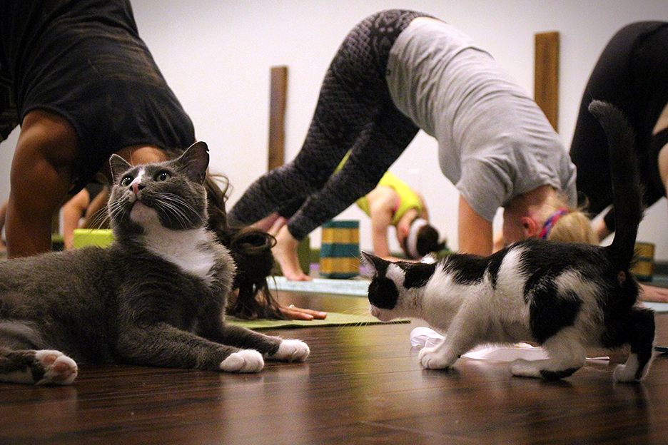
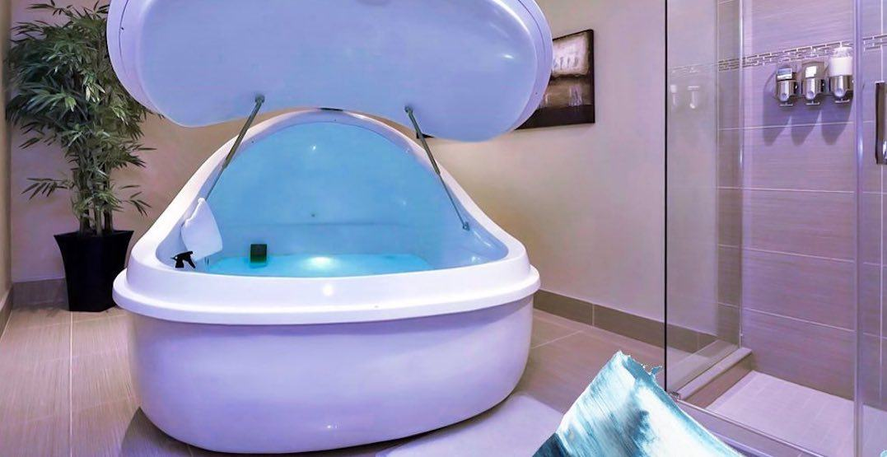

About Us:
We are a small locally owned gym based in Springfield, MO. Our founders believe that exercise should be accessible to all ages. Because of this we have created a family friendly environment. Our classes are designed to be inclusive of all age ranges. It doesn't matter if you are old or young you are welcome to come experience our amazing classes at Fun for Fitness
Cat yoga is the latest trend gaining popularity. Here at Fun for Fitness we take great pride in providing family friendly workouts! Everyone in the family will love our Yin-Yoga class combined with everyone's favorite animal the feline. Yin-yoga is designed to calm the nervous system. Combine this class with serene cats to provide your nervous system the reset it needs!
Come experience the wonder of our sensory deprivation tanks. Our tanks allow guests for float weightlessly while relaxing body and mind. Our facility houses numberous sensory deprivation tanks to allow clients quick access when needed. Each sensory deprivation tank is housed in it's own private room for optimal relaxation and seclusion.